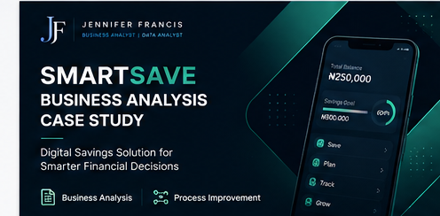

Real questions, answered with real data.
Every project below started as a business question, not a dataset. Full write-ups, methodology, and dashboards are one click away.
Women's Clothing E-Commerce Review Analysis
Mined 23,486 customer reviews to surface sentiment trends, recommendation behaviour, and product performance — then packaged the findings into a live Power BI dashboard a merchandising team could act on same-day.
Read the case studySlyva Crescent Hotel Booking: Commercial Impact Analysis
Quantified $16.73M in lost revenue from cancellations and identified exactly which customer segments carried the most recoverable revenue.
Read the case study
WealthBridge Advisors: Investment Preference Analysis
Cleaned investor survey data and identified the KPIs that actually predict investor behaviour across 40 respondents.
Read the case study
SmartSave Business Analysis Case Study
Full BA deliverable set — requirements documentation, process models, and wireframes across seven app modules — for a digital savings product.
Read the case study